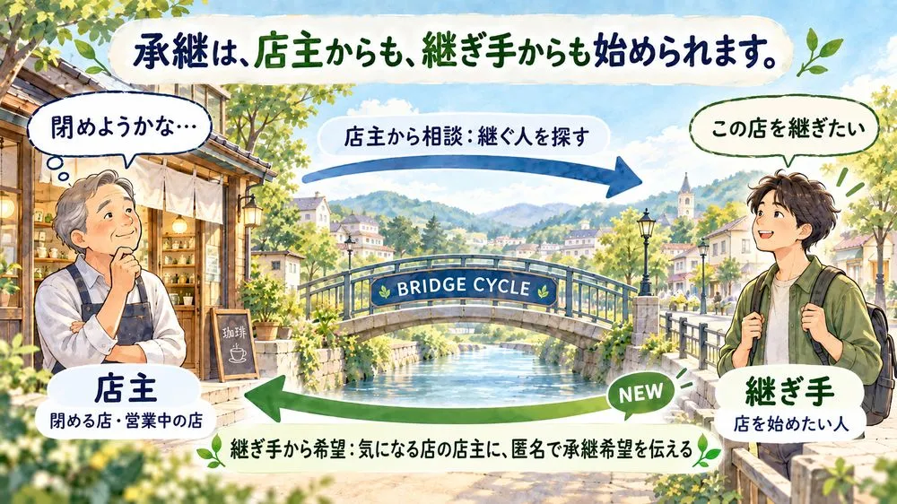
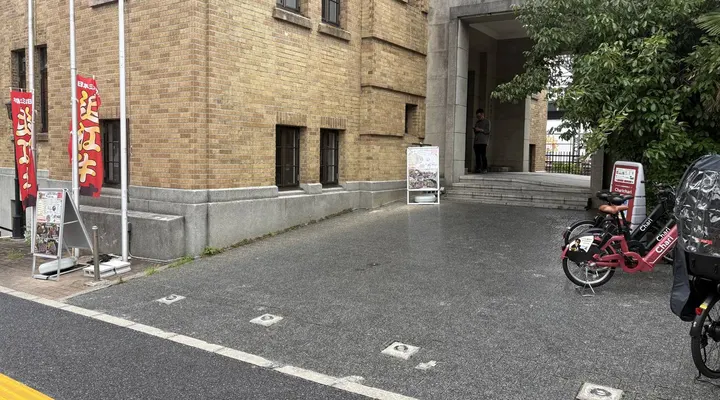

01 ／ 設備メーカー・販売会社
「予算がない」で止まった商談を、もう一度。
見積後の保留案件を、補助金候補・自己負担・発注前の注意点から無料で一次確認。御社の営業を支える外部の資金計画パートナーです。
初回に確認すること制度候補 ／ 追加確認事項 ／ 発注前の注意点
顧客名なしで1件、無料一次診断 ›登録料・月額費用0円。採択・受注は保証しません。滋賀・京都 ／ 認定経営革新等支援機関 ／ 企業と地域の現場支援
見積を出したのに決まらない設備商談。閉店前に次へつなぎたい店舗。地域企業の課題を調べ、動かしたい自治体。BRIDGE CYCLEは、一件ごとの現場から具体策を考えます。
自治体・支援機関の方は 産業調査・地域振興支援へ ›
 代表 中村裕二商工会の経営指導員として20年以上・500社超の支援経験（代表個人の通算）
代表 中村裕二商工会の経営指導員として20年以上・500社超の支援経験（代表個人の通算）
※「20年以上」「500社超」は代表個人の通算実績であり、2026年設立の当社単独の実績ではありません。
OUR FOCUS
当社は、次の3分野で「何を、どう進めるか」を具体的に支援します。
01 ／ 設備メーカー・販売会社
見積後の保留案件を、補助金候補・自己負担・発注前の注意点から無料で一次確認。御社の営業を支える外部の資金計画パートナーです。
02 ／ 店舗を閉める前に
店舗を閉じる前に、内装や設備をそのまま引き継ぐ選択肢を検討。店主と継ぎ手双方の条件を整理します。
03 ／ 自治体・支援機関
地域企業の実態調査、産業振興計画、創業・承継支援、社会実験の企画・運営。現場経験を生かして業務を組み立てます。
補助金の申請、看板広告、売り場レンタルのご相談は 全サービス一覧 から。
OUR SERVICES
上記の3分野に加え、補助金申請、看板・集客診断、試験販売の場づくりにも対応しています。
制度に申し込む前に、投資目的、資金繰り、投資回収を確認。補助金の申請支援と、設備販売会社の営業支援を行います。
地域産業調査、産業振興計画、創業・承継支援、地域企業連携や社会実験の企画・運営など、自治体・支援機関の業務に対応します。
看板を設置して終わりにしない。滋賀・京都を中心に、看板からGoogleマップ・検索・来店までの導線を診断します。
閉める前の店舗と、次に始めたい人をつなぐ。内装・設備を活かして閉店費用と開業負担を抑える選択肢をつくります。
常設店を持つ前の試験販売から、地域の新しい賑わいづくりまで。旧大津公会堂前庭や南草津駅周辺の出店機会を支援します。
ご相談内容に応じて対応範囲や費用を事前にご案内します。行政受託・社会実験等は案件ごとの条件により対応いたします。
あなたは、どちらですか。
閉める前。始める前。お金を使う前。
迷ったら、LINEで一言ください。どこから話せばいいか、こちらで整理します。
店内の写真はイメージです（wei／Omar Ramadan／Minyeong Jeong・Unsplash）。

店舗と地域の実践事業
5つの主力事業のうち、退店前承継・売り場レンタル・補助金・看板を具体的な取り組みとともにご紹介します。
閉める店の内装・設備を、壊す前に次の店主へ。店主の閉店費用を減らし、始める人の開業費用を抑えます。

試す駅前で、毎週売る。
店を持つ前に、人の集まる場所で売ってみる。売れ方の記録が、開業や2号店を決める材料になります。
使えるか、0円で確認。
認定経営革新等支援機関として、開業・設備投資の補助金を申請から支えます。持続化補助金は着手金0円、料金は採択されたときだけ。
集客診断0円。
滋賀・京都で、看板から検索・地図・口コミ・予約までの取りこぼしを診断し、効く看板を紹介します。
商工団体への補助を「相談件数」から「支援先の生産性の伸び」で評価する成果連動型へ。その見直しを最初に提案し、実現させた代表が、調査・計画づくりから事業者への伴走までお受けします。
代表が最初に提案し、滋賀県・近畿経済産業局にも掛け合って実現（令和6年）
商工会の経営指導員として約20年、500以上の事業者の開業・承継・閉店に立ち会ってきました。失敗を避けてきた経験より、失敗を乗り越えてきた経験のほうが役に立つ。だから「失敗しない方法」ではなく、「うまくいかなくても戻れる始め方」と「壊さずに渡せる閉め方」を扱っています。
在職中には、大津市の商工団体向け補助制度を「相談件数」から「支援先の生産性の伸び」で評価する成果連動型へ見直すことを最初に提案し、県・国にも掛け合って実現させました。大津市中小企業・小規模企業振興ビジョンの策定では円卓会議の委員を、策定後も令和6年まで振興推進会議の委員を務めました。公的な仕事の経歴 →
まだ相談するほどではない方へ。小さな商いを始める・続ける・渡す人の話を、ここで書いています。
営業中のお店の内装・厨房設備・什器（造作）を、閉店して壊す前に、同じ場所で開業したい次の店主へ引き継ぐことです。店主は原状回復の工事費を、次の店主は開業の費用を抑えられる可能性があります。くわしくは「退店前承継とは」をご覧ください。
居抜きの仲介や造作の買取は、主に退去が決まってから物件と造作を動かします。退店前承継は、解約を通知する前の営業中から動き、次の店主の開業準備（事業計画・資金計画・融資の申込）まで含めて引き継ぎを整えます。
できます。店舗の物件は解約の予告が数か月前に必要なことが多く、予告を出す前のご相談がいちばん有利です。店の値打ちの試算は匿名で、入力した内容は送信されません。ご相談の秘密は守ります。
相談・試算・登録は0円です。退店前承継も補助金の申請サポートも着手金は0円で、料金は成約・採択したときにいただくのが基本です。店主が登録したお店の詳しい情報（店名・場所・写真）を、店を継ぐ方にお伝えするときは、1店3万円（税別）です。お支払いは、自己資金を当社が確認し、お伝えできると決まったあとです。お伝えしてから14日以内に店主との初回の面談ができなかったときは、全額をお返しします（ご自身の都合で日程が合わなかった場合を除く）。金額はそれぞれのページに載せています（店を閉める方／店を始めたい方／補助金申請サポート）。
滋賀県（大津市を中心に）と京都府です。ご相談は、LINEのビデオ通話やGoogle Meetでもお受けしています。
できます。国の認定経営革新等支援機関として、事業計画づくり、創業融資の申込、補助金の申請を支援しています。初回のご相談は0円です。
行っていません。賃貸借の契約は大家さんと次の店主が直接結び、内装・設備の代金も当事者どうしで直接やりとりします。当社がお金を預かることはありません。
| 会社名 | BRIDGE CYCLE株式会社 |
|---|---|
| 設立 | 2026年3月17日 |
| 代表者 | 代表取締役 中村 裕二 |
| 所在地 | 〒520-0801 滋賀県大津市におの浜2-1-28 |
| 認定 | 認定経営革新等支援機関（中小企業庁） 認定番号 109825000112 中小企業庁の認定経営革新等支援機関のページから検索して確認できます |
| 所属団体 | 膳所駅前商店街振興組合 賛助会員 |
| 事業内容 | 退店前承継（店舗の内装・設備の引き継ぎ支援）／創業・事業計画・融資申込の支援／補助金申請の支援／売り場レンタル／出張料理の仕組みづくり（うちのシェフ）／個人向け診断（わたしのこれから診断） |
| 対応地域 | 滋賀県（大津市を中心に）、京都府 |
| しないこと | 不動産の仲介、医療機器の売買、お客さま・患者さまの情報の受け渡し |
| お問い合わせ | info@bridgecycleco.com／公式LINE @907kxssd 営業のお電話はご遠慮ください。ご相談は、LINEかメールでお受けしています。 |
閉めるか迷っている、店を始めたい、補助金を使いたい。どの段階でも、まずはLINEで一言どうぞ。代表がお返事します。